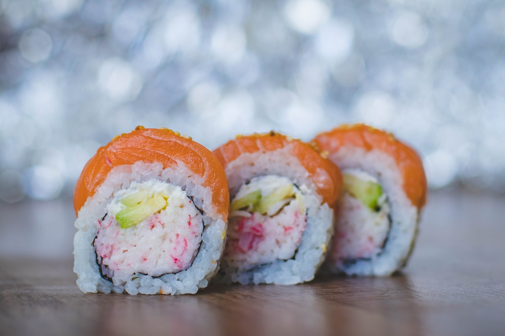

|

Суши начинали свою историю с берегов залива Эдо, так назывался токийский залив ранее. С тех пор было придумано множество стилей суши, в том числе, превосходящих и оригинальный стиль нигири-дзуси. Изменились и ингредиенты для суши, но все же сохранили свое кулинарное единство, характерное для японской кухни.
|